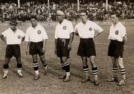
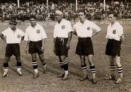
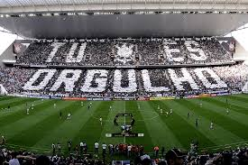
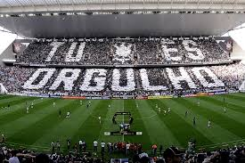

Fundado em 1º de setembro de 1910, o Sport Club Corinthians Paulista é um dos maiores e mais vitoriosos clubes do Brasil e do mundo. Nascido no coração de São Paulo, o Timão surgiu para representar o povo, carregando consigo a essência da luta, da garra e da superação
 


Desde 2014, o Corinthians manda seus jogos na Neo Química Arena, um dos estádios mais modernos do Brasil e palco de grandes momentos, como a abertura da Copa do Mundo de 2014 e partidas históricas do Timão.


Quando falamos do Sport Club Corinthians Paulista, não podemos deixar de falar da Fiel Torcida, uma das maiores e mais apaixonadas do Brasil e do mundo. Com mais de 30 milhões de torcedores espalhados pelo país, a Fiel é conhecida pelo apoio incondicional ao clube, seja em tempos de vitórias ou dificuldades.
 

O apoio da torcida corinthiana vai além das fronteiras do Brasil. Em 2000, quando o Corinthians conquistou o seu primeiro título mundial, milhares de corinthianos viajaram até o Japão para acompanhar a final do Mundial de Clubes da FIFA.
Não é à toa que a Fiel é considerada o 12º jogador do Corinthians. Nas arquibancadas, a energia é única. É a Fiel que canta, vibra e faz com que cada jogador sinta o peso de vestir o manto sagrado.
Siga o Corinthians nas redes sociais:
 |
|